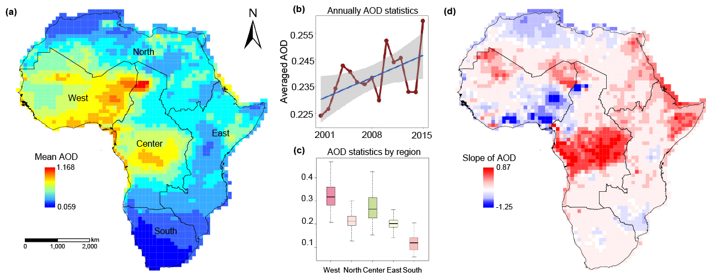
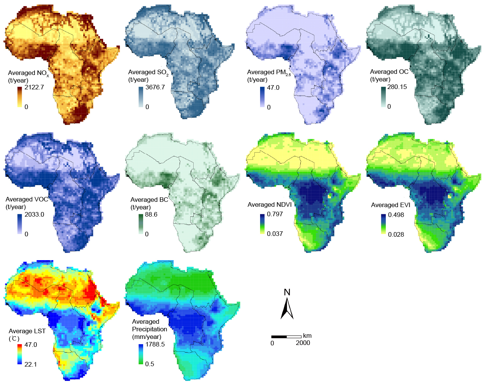
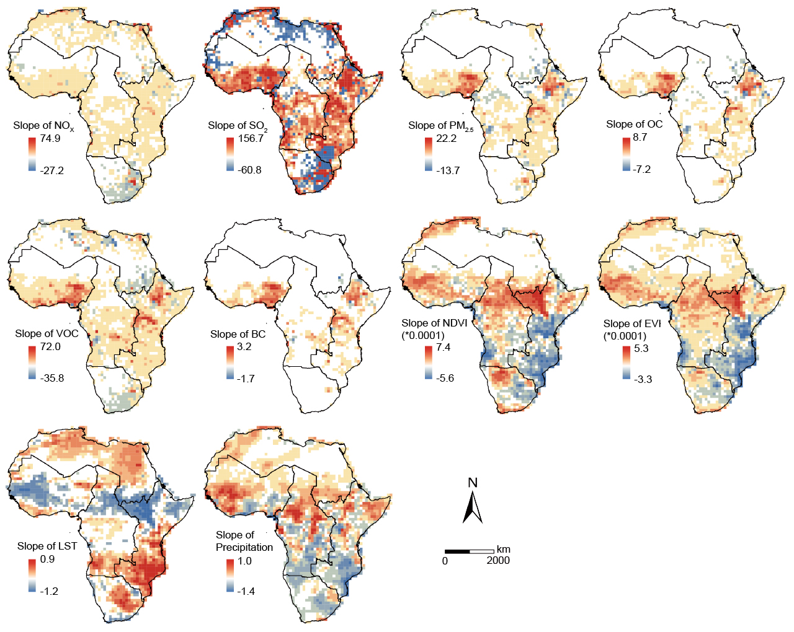
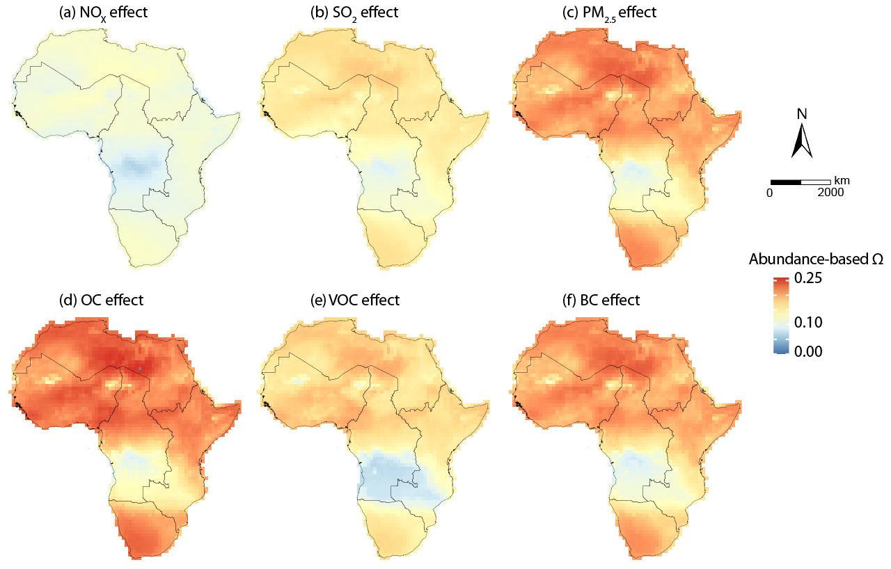
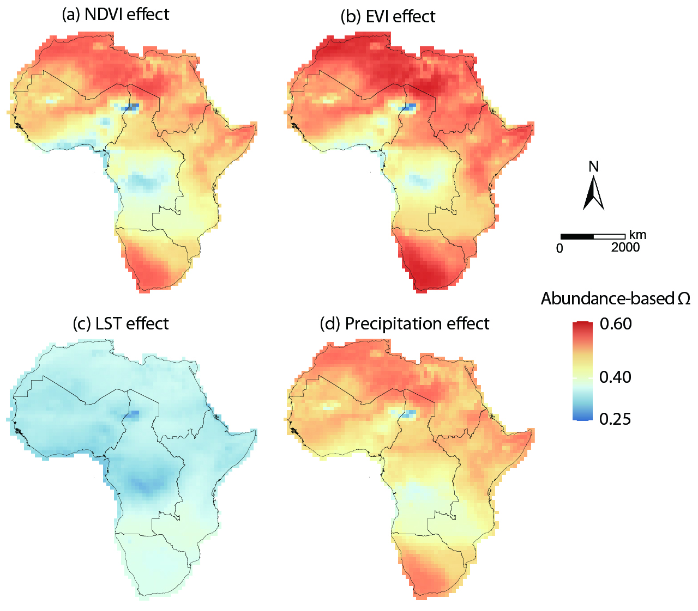

Co-authored Journal Article
A spatio-temporal unmixing with heterogeneity model for the identification of remotely sensed MODIS aerosols: Exemplified by the case of Africa
https://doi.org/10.1016/j.jag.2024.104068Overview
This paper proposes the STUH model to decompose long-term aerosol patterns across Africa, identify spatially varying aerosol determinants, and compare the relative contributions of natural and anthropogenic variables.
Abstract
Aerosols are crucial constituents of the atmosphere, with significant impacts on air quality. Aerosol optical depth (AOD) is critical in assessing solar resources and modeling sky radiance. However, comprehensive aerosol studies at a continental scale are limited, and existing methodologies need to consider spatial characteristics. This study develops a spatio-temporal unmixing with heterogeneity (STUH) model to evaluate spatial patterns and temporal trends of atmospheric aerosols across the African continent. The spatio-temporal AOD data cube, comprising monthly averaged MODIS-derived AOD data from 2001 to 2015, was decomposed using spatially non-negative matrix variabilization to explore the spatial determinants and the impacts of their interactions on AOD using a geographically optimal zones-based heterogeneity (GOZH) model. Our findings reveal an increasing trend of aerosol levels across Africa in the past 15 years, combined with the spatio-temporal AOD pattern explained by five abundance variables. We find that in different regions across Africa, the impact of natural variables on AOD was 1.56 to 3.01 times the impact of human variables, with significant spatial variations. These results are essential for understanding the climatic implications of atmospheric aerosols in Africa.
Highlights
- A spatio-temporal unmixing with heterogeneity model (STUH) is proposed.
- The STUH combines an unmixing model with the spatially stratified heterogeneity model.
- STUH is used to assess aerosol patterns in Africa over 15 years.
- The key factors influencing aerosol changes in Africa are identified.
- Natural variables impact AOD more than human variables.
Figures and Tables
Note: only figures drawn or visually refined by Kai Ren are displayed here. 注：此处仅展示由 Kai Ren 绘制或美化整理的图片。




